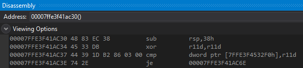
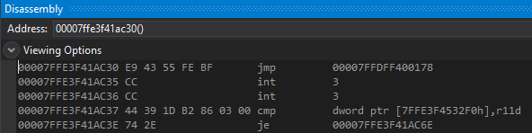
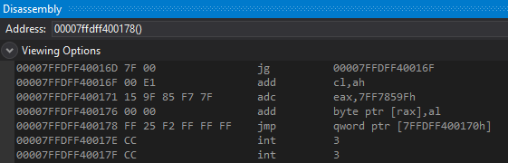
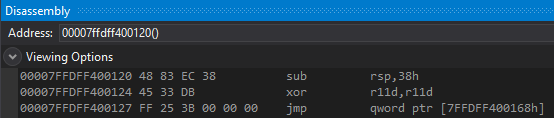

# Microsoft Detours
A Microsoft library that hooks functions. Is good. Current version is 4.0.
3.0 only supported x86 detours. You had to pay for the professional edition for x64 detours.
In 4.0 everything is now free.
•
https://guidedhacking.com/threads/how-to-use-ms-detours-microsoft-detours-tutorial.13553/•
https://www.codeproject.com/Articles/30140/API-Hooking-with-MS-Detours•
https://github.com/microsoft/Detours/wiki/Using-Detours - Use the official Microsoft Detours wiki!
## x64 Example
### Set up and use Detours
Download x64 detours with
vcpkg:
mkdir C:\dev
cd C:\dev
git clone https://github.com/microsoft/vcpkg
.\vcpkg\bootstrap-vcpkg.bat
.\vcpkg\vcpkg install detours:x64-windows
The header file will be in:
C:\dev\vcpkg\packages\detours_x64-windows\include\detours\detours.hAnd the .lib file will be in:
C:\dev\vcpkg\packages\detours_x64-windows\lib\detours.libIn Visual Studio:
1. Set project to x64
2. Make sure to include the header.
3. Navigate to
Project > Properties > Linker > Input > Additional Dependencies > Edit and add the path to
detours.lib into Additional Dependencies.
### MessageBoxA Detours Demo
Here's MessageBoxA before hooking:
And here Detours has hooked it.
Here's the trampoline:
And here's the code at
orig_MessageBoxA.
This is the function prologue code in MessageBoxA that the detour overwrote.

### Code
/*
x64 function hooking with Microsoft's Detours.
*/
#include <stdio.h>
#include <Windows.h>
#include "C:\dev\vcpkg\packages\detours_x64-windows\include\detours\detours.h"
int(WINAPI* orig_MessageBoxA)(HWND hWnd, LPCSTR lpText, LPCSTR lpCaption, UINT uType) = MessageBoxA;
int WINAPI hook_MessageBoxA(HWND hWnd, LPCSTR lpText, LPCSTR lpCaption, UINT uType)
{
printf("MessageBoxA intercepted! \n");
printf("\t text: %s \n\t caption: %s \n\t type: %d \n", lpText, lpCaption, uType);
return orig_MessageBoxA(hWnd, lpText, lpCaption, uType);
}
int main(void)
{
MessageBoxA(NULL, "I think I should greet myself", "Hmm...", MB_OK);
// Install MS Detours hook
DetourRestoreAfterWith();
DetourTransactionBegin();
DetourUpdateThread(GetCurrentThread());
DetourAttach(&(void*&)orig_MessageBoxA, hook_MessageBoxA);
DetourTransactionCommit();
MessageBoxA(NULL, "Hello", "Hi #1", MB_OK);
MessageBoxA(NULL, "Hello good sir!", "Hi #2", MB_OK);
// Remove MS Detours hook
DetourTransactionBegin();
DetourUpdateThread(GetCurrentThread());
DetourDetach(&(PVOID&)orig_MessageBoxA, hook_MessageBoxA);
DetourTransactionCommit();
MessageBoxA(NULL, "Did he hear me ok?", "Hmm...", MB_OK);
return 0;
}